물류관리사-1교시 (2014-06-28 기출문제)
1과목: 물류관리론
1. 물류의 영역 중 생산물류에 관한 설명으로 옳지 않은 것은?
- 원자재나 중간재를 사용하여 제품을 생산하는 과정에서 수행되는 물류활동을 말한다.
- 생산된 최종제품을 소비자에게 전달하는 수송과 배송활동 뿐만 아니라 이에 수반되는 제반 물류활동을 말한다.
- 창고에 보관 중인 자재의 출고작업을 시작으로 자재를 생산공정에 투입하고 생산된 완제품을 보관 창고에 입고하기까지 수반되는 운반, 보관, 하역, 재고관리 등 사내에서 이루어지는 물류활동을 말한다.
- 제품의 생산과정에서는 소요시간 단축이 핵심과제이기 때문에 공장 내 운반, 하역 및 창고의 자동화 등이 중요하다.
- 일반적으로 제품생산 단계에서도 다양한 물류활동이 수반되므로 철저한 사전계획 하에 물류활동이 수행되어야 한다.
(정답률: 72%)

2. 물류산업의 발전 동향에 관한 설명으로 적절하지 않은 것은?
- 전자상거래의 비중이 늘어남에 따라 신속하고 신뢰성 높은 저비용 물류체계의 구축이 더욱 중요해지고 있다.
- 물류정책은 물류인프라 확충, 정보화 및 표준화를 통한 물류선진화를 추구하면서 환경과 안전을 중시하는 경향이 커지고 있다.
- 물류산업의 국제화가 가속화되어 국내시장에서 세계 유수기업들과 경쟁이 심화되고 있다.
- 중소기업들은 경쟁력 확보를 위해 독자적인 물류 체계를 구축하는 형태로 자사창고 및 수송차량 확보를 증가시키는 추세이다.
- 국제화가 진전됨에 따라 국제 표준화에 대한 적응과 국가 간 규제에 대한 대응력 강화가 필요하다.
(정답률: 76%)
3. 기업물류 환경변화의 하나인 대량고객화(Mass Customization)에 관한 설명으로 옳은 것은?
- 다품종 대량생산
- 다품종 소량생산
- 저원가 고비용 생산
- 소품종 대량생산
- 소품종 소량생산
(정답률: 48%)
4. 슈메네(Schmenner)는 고객과의 상호작용(개별화정도)과 노동집중도(노동집약 형태)에 따라 서비스 프로세스를 분류하였다. 다음 중 상대적으로 노동 집중도가 높은 조직에서 인적자원 관리를 위한 의사결정시 고려사항으로 옳지 않은 것은?
- 직무수행의 방법과 통제
- 고용 및 훈련계획
- 인력자원 운영에 대한 스케줄링
- 토지, 시설 및 설비에 대한 투자결정
- 복리후생
(정답률: 66%)
5. 주문주기시간(order cycle time)의 구성요소들을 시간 순서대로 옳게 나열한 것은?
- order transmittal time → order processing time → order assembly time → stock availability → delivery time
- order assembly time → order processing time → order transmittal time → order picking time → delivery time
- order assembly time → order transmittal time → order picking time → order processing time → delivery time
- order processing time → order picking time → order transmittal time → delivery time → order assembly time
- order transmittal time → order assembly time → order processing time → delivery time → stock availability time
(정답률: 64%)
6. 경쟁우위 창출을 위한 기업의 물류관리 전략으로 적절하지 않은 것은?
- 효율적인 물류활동을 통하여 기업은 원가를 절감할 수 있고, 이를 바탕으로 저가격전략에 의한 시장 점유율 제고 및 수익률 증대를 추구할 수 있다.
- 통합물류관리 관점에서 기업은 운송비 절감에 집중하여 차별화된 경쟁우위를 확보해야 한다.
- B2B 거래에서 고객이 원하는 장소로 직접배달, 고객에 대한 교육훈련 등의 서비스 활동은 경쟁우위를 창출할 수 있는 방안이다.
- 고객의 다양한 요구를 저렴한 비용으로 충족시킬 수 있는 물류시스템을 보유한 경우, 보다 넓은 고객층을 확보할 수 있다.
- 고객주문에 대한 제품가용성, 주문처리의 정확성 등의 물류서비스를 제공함으로써 경쟁우위를 확보할 수 있다.
(정답률: 40%)
7. 물류정보시스템의 도입효과로 옳지 않은 것은?
- 재고관리의 정확도 향상
- 영업부서 요청에 따른 초과재고 보유로 판매량 증가
- 신속하고 정확한 재고정보 파악으로 생산ㆍ판매활동 조율
- 효율적 수ㆍ배송 관리를 통한 운송비 절감
- 수작업 최소화로 사무처리 합리화 가능
(정답률: 83%)
8. 물류관리의 필요성과 원칙에 관한 설명으로 옳지 않은 것은?
- 신속, 저렴, 안전, 확실하게 물품을 거래 상대방에게 전달해야 한다.
- TV 홈쇼핑과 온라인상에서 다양한 형태의 재고정보를 제공함으로써 매출액 증가를 가져올 수 있다.
- 효율적인 물류관리를 통하여 해당 기업은 비용을 절감하고 서비스 수준을 향상시킬 수 있다.
- 고객서비스 향상과 물류비용 절감이라는 상반된 목표를 달성하기 위하여 물류 단위기능별 부분최적화를 추구한다.
- 물류관리 목적 달성을 위하여 고객서비스 제공과정에서 7R 원칙이 강조되고 있다.
(정답률: 65%)
9. 다음 표는 물류계획을 전략, 전술, 운영의 순으로 나타낸 것이다. ( ) 안에 들어갈 내용으로 옳은 것은?
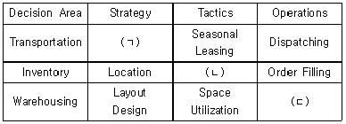
- ㄱ: Mode Selection, ㄴ: Safety Stock Level, ㄷ: Order Picking
- ㄱ: Routing, ㄴ: Vendor Selection, ㄷ: Stock Location
- ㄱ: Mode Selection, ㄴ: Vendor Selection, ㄷ: Back Order
- ㄱ: Stock Location, ㄴ: Space Allocation, ㄷ: Back Order
- ㄱ: Stock Location, ㄴ: Space Allocation, ㄷ: Order Picking
(정답률: 50%)
10. 3자물류(3PL) 활용을 위한 물류아웃소싱에 관한설명으로 옳지 않은 것은?
- 아웃소싱업체에 대하여 적극적이고 직접적인 지휘 통제체계 구축이 필요하다.
- 화주기업은 물류아웃소싱을 통하여 핵심역량에 집중할 수 있어서 기업경쟁력 제고에 유리하다.
- 화주기업은 고객 불만에 대한 신속한 대처가 곤란하고 사내에 물류전문지식 축적의 어려움을 겪을 수 있다.
- 화주기업은 물류아웃소싱 이전에 자사의 물류비 현황을 정확히 파악하는 것이 중요하다.
- 물류아웃소싱의 주된 목적과 전략은 조직 전체의 전략과 일관성을 유지해야 한다.
(정답률: 61%)
11. 물류자회사를 만들었을 때 모회사에서 본 장점에 관한 설명으로 옳지 않은 것은?
- 모회사에서 추구하는 핵심사업에 역량을 집중할 수 있는 여건 확립
- 물류시설, 인원, 장비 등을 물류자회사 소속으로 분리하여 운영하면 물류관리 책임 및 물류비 관리의 다원화 실현
- 고임금의 물류관련 종업원을 자회사로 전환시켜 임금수준을 조절할 수 있는 완충지대 역할을 수행
- 모회사의 물류전략을 잘 이해하고 실천할 수 있는 물류자회사를 설립하여 전체적인 비용을 낮추면서 효과적인 서비스를 제공
- 외부 물류기업에 의뢰하기 보다는 물류자회사를 설립하여 운영한다면 현금유출 축소 및 물류, 판매관련 정보수집이 신속하고 용이
(정답률: 50%)
12. 6-시그마 기법에 관한 설명으로 옳지 않은 것은?
- 6-시그마 기법은 수치데이터를 통하여 분석적인 접근방식과 오픈마인드 수행을 요구한다.
- 6-시그마 기법은 상의하달 방식으로 강력하게 추진하는 것이 보다 효과적이다.
- 6-시그마 기법은 프로세스 중시형 접근방법이다.
- 6-시그마 기법을 도입하여 고품질을 추구하는 기업은 지속적으로 비용이 더 많이 소요된다.
- 6-시그마 기법을 활용하면 제품 또는 서비스의 리드타임이 단축되고 재고감축 효과가 있다.
(정답률: 62%)
13. 물류합리화의 필요성에 관한 설명으로 옳지 않은 것은?
- 제품수명주기 연장에 대하여 적절한 대응
- 복잡하고 글로벌화 되는 고객의 물류서비스 요구에 대응
- 물류서비스 원가 상승에 대한 대응
- 소비자의 다양한 요구 변화에 대응
- 물류거점의 집약화 등 산업계의 변화 요구에 대응
(정답률: 80%)
14. JIT(Just In Time) 시스템의 운영 특성에 관한 설명으로 옳지 않은 것은?
- 생산소요시간 감소 및 각 공정 간 작업부하의 균일화를 위해 소롯트(lot)가 요구된다.
- 재고를 최소로 유지하기 위해서는 불량 없는 품질 관리가 중요하다.
- 공급되는 부품의 품질, 수량, 납품시기 측면에서 공급업체와의 신뢰성 구축과 긴밀한 협조체제가 요구된다.
- 원활한 활동을 위해 노동력의 유연성과 팀워크가 요구된다.
- 재고수준이 일정할 필요가 없으며 상황에 따라 변하는 예측수요 등에 바탕을 둔 재고관리가 요구된다.
(정답률: 63%)
15. 최근 물류ㆍ유통 환경변화에 관한 설명으로 옳지 않은 것은?
- 화주기업들 간 치열한 경쟁으로 물류아웃소싱이 지속적으로 확대되고 있다.
- 고객 요구가 고도화ㆍ다양화됨에 따라 일반 소화물의 다빈도 정시운송은 물론 서비스 영역도 ‘door to door’ 단계를 지나 ‘desk to desk’ 단계에 이르기까지 점점 확대되어 가고 있다.
- 유통채널 파워가 유통기업에서 제조기업으로 이동하게 되어 공급사슬의 복잡화가 가중되고 있다.
- IT의 발전으로 전자상거래 시장이 확대되면서 홈쇼핑, 온라인 시장이 매년 큰 폭으로 성장하고 있다.
- 20⑤년 교토의정서의 발효 이후 미국, EU, 일본등 주요 국가들은 CO2 배출량의 삭감과 모달시프트(Modal Shift)등 녹색물류를 자국의 물류정책에 적극 반영하고 있다.
(정답률: 70%)
16. 다음과 같은 실적을 가진 A기업의 영업이익을 현재 수준에서 10% 증가시키기 위해 매출액을 유지하면서 물류비를 줄이는 방법 또는 매출액을 증가시켜 달성하는 방법 중에서 한 가지를 선택하여 경영전략을 수립하고자 한다. 이를 위해 필요한 물류비 감소비율과 매출액 증가비율은 각각 얼마인가? (단, 두 가지 방법 모두에서 영업이익은 6%로 한다.)
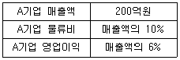
- 6%, 20%
- 5%, 15%
- 6%, 6%
- 5%, 20%
- 6%, 10%
(정답률: 61%)
17. 물류비 산정의 일반기준에 해당하지 않는 것은?
- 인력, 자금, 시설 등의 회계정보 작성
- 영역별, 기능별, 관리목적별 구분 집계
- 손익계산서와 대차대조표 활용
- 운영을 위한 정보시스템 구축 필요
- 물류활동의 개선방안 도출 용이
(정답률: 43%)
18. 제품수명주기와 고객서비스 전략에 관한 설명으로 옳지 않은 것은?
- 도입기 단계에서는 판매망이 소수의 지점에 집중되고 제품의 가용성은 제한된다.
- 성장기 단계에서는 비용절감을 위해 재고를 집중하여 통합 관리할 가능성이 크다.
- 성장기 단계에서는 비용과 서비스간의 상충관계를 고려한 물류서비스 전략이 필요하다.
- 성숙기 단계에서는 물류서비스의 차별화 전략이 필요하다.
- 쇠퇴기 단계에서는 비용최소화 보다는 위험최소화 전략이 필요하다.
(정답률: 61%)
19. 구매계약의 유형에 관한 설명으로 옳지 않은 것은?
- 일반경쟁방식은 불성실한 업체의 경쟁참가를 배제한다.
- 지명제한경쟁방식은 절차의 간소화로 경비절감이 가능하다.
- 수의계약방식은 신용이 확실한 거래처의 선정이 가능하다.
- 일반경쟁방식은 긴급한 경우, 소요시기에 맞추어 구매하기 어렵다.
- 수의계약방식은 공정성이 결여될 수 있다.
(정답률: 58%)
20. RFID(Radio Frequency Identification) 시스템에 관한 설명으로 옳지 않은 것은?
- 원거리 인식 및 여러 개의 정보를 동시에 판독하거나 수정할 수 있다.
- 장애물 투과기능도 지니고 있기 때문에 교통 분야에 적용도 가능하며 반영구적인 사용이 가능하다.
- 태그에 대용량의 데이터를 반복적으로 저장할 수 있으며 데이터 인식속도도 타 매체에 비해 빠르다.
- 바코드시스템과 마찬가지로 접촉하지 않으면 인식이 불가능하다.
- 기존 바코드에 기록할 수 있는 가격, 제조일 등 정보 외에 다양한 정보를 인식할 수 있다.
(정답률: 75%)
21. 물류정보시스템의 목표에 해당하지 않는 것은?
- 기업 간 정보 공유로 유통재고 최소화
- 효율적인 물류의사결정을 위한 지원
- POS를 통해 획득한 실시간 정보에 기초하여 PUSH 방식의 유통망 지원
- 조달, 생산, 판매 등을 포괄적으로 연결하여 전체 물류흐름을 효율적으로 관리
- 환경변화에 신속히 대응하여 기업 경쟁력 향상
(정답률: 67%)
22. 발주단말기를 이용한 데이터 직접 전송으로 즉시 납품이 가능한 자동발주시스템(EOS: Electronic Ordering System)에 관한 설명으로 옳지 않은 것은?
- 발주시간 단축, 발주오류 감소로 발주작업 효율성 제고가 가능하다.
- EOS 도입 이후, 오납이나 결품이 발생할 가능성이 큰 것이 단점이다.
- EOS를 도입한 점포는 한정된 매장 공간에 보다 많은 종류의 상품을 진열할 수 있다.
- EOS를 도입한 소매점의 경우 상품코드에 의한 정확한 발주가 가능하다.
- EOS를 위한 발주작업의 표준화 및 매뉴얼화는 신속한 발주체계 확립에 기여할 수 있다.
(정답률: 72%)
23. 고객서비스의 구성요소는 거래 전 요소, 거래발생시 요소, 거래 후 요소로 구분할 수 있다. 이 가운데 거래 전 요소에 해당하는 것은?
- 재고 품절수준
- 제품주문정보 입수가능성
- 제품 대체성
- 주문의 간편성
- 명문화된 고객서비스 정책
(정답률: 58%)
24. 다음은 2013년도 K기업이 지출한 물류비 내역이다. 이 중에서 자가물류비와 위탁물류비는 각각 얼마인가?
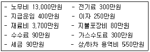
- 자가물류비: 17,000만원, 위탁물류비: 1,760만원
- 자가물류비: 17,300만원, 위탁물류비: 1,460만원
- 자가물류비: 17,640만원, 위탁물류비: 1,120만원
- 자가물류비: 17,730만원, 위탁물류비: 1,030만원
- 자가물류비: 17,550만원, 위탁물류비: 1,210만원
(정답률: 56%)
25. 수ㆍ배송 공동화의 효과로 옳지 않은 것은?
- 설비 및 차량의 가동률과 적재율 향상
- 물류 아웃소싱을 통한 핵심역량 집중 가능
- 소량화물 혼적으로 규모의 경제효과 추구
- 중복ㆍ교차수송의 배제로 물류비 절감과 교통체증 완화
- 타사 핵심기술 파악 용이
(정답률: 58%)
26. QR(Quick Response)의 구현원칙에 관한 설명으로 옳지 않은 것은?
- 생산 및 포장에서부터 소비자에게 이르기까지 효율적인 제품의 흐름을 추구한다.
- 제조업체와 유통업체간에 표준상품코드로 데이터 베이스를 구축하고, 고객의 구매성향을 파악 공유하여 적절히 대응하는 전략이다.
- 조달, 생산, 판매 등 모든 단계에 걸쳐 시장정보를 공유하여 비용을 줄이고, 시장변화에 신속하게 대처하기 위한 시스템이다.
- 저가격을 고수하는 할인점, 브랜드 상품을 판매하는 전문점, 통신판매 등을 연계하여 철저한 중앙 관리체제를 통해 소매점업계의 경영합리화를 추구하는 전략이다.
- 고객정보의 신속한 파악을 통하여, 필요할 때에 소량을 즉시 보충할 수 있도록 개발된 식품유통 분야의 대응시스템이다.
(정답률: 53%)
27. 포장 합리화에 관한 설명으로 옳지 않은 것은?
- 포장의 크기를 대형화할 수 있는지 여부를 결정해야 한다.
- 포장을 할 경우, 가능하면 비슷한 길이와 넓이를 가진 화물을 모아 포장 크기를 규격화시켜야 한다.
- 내용물의 보호기능을 유지하는 범위에서 사양의 변경을 통한 비용절감이 이루어질 수 있도록 검토 해야 한다.
- 적정(適正) 포장 기준이 포장합리화의 절대적인 기준이 되어야 한다.
- 물류활동에 필요한 장비나 기기 등을 운송, 보관, 하역기능과 유기적 연결이 가능하도록 해야 한다.
(정답률: 67%)
28. 다음 SCM 전략에 관한 설명을 바르게 연결한 것은?
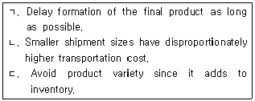
- ㄱ: Postponement, ㄴ: Consolidation, ㄷ: Standardization
- ㄱ: Postponement, ㄴ: Standardization, ㄷ: Consolidation
- ㄱ: Standardization, ㄴ: Postponement, ㄷ: Consolidation
- ㄱ: Standardization, ㄴ: Consolidation, ㄷ: Postponement
- ㄱ: Consolidation, ㄴ: Standardization, ㄷ: Postponement
(정답률: 70%)
29. 채찍효과(Bullwhip Effect)의 개선방안으로 옳은 것은?
- 기업 간의 협업을 강화시켜 부족분게임(shortage game)을 야기시킨다.
- 정보의 비대칭성 확대를 통해 불확실성을 감소시킨다.
- 공급사슬 참여자 간의 정보공유를 통해 사일로 (silo) 효과를 증가시킨다.
- 일괄주문방식을 강화하여 비용증가를 억제시킨다.
- 전략적 파트너십을 통해 공급망 관점의 재고관리를 강화시킨다.
(정답률: 67%)
30. CPFR(Collaborative Planning Forecasting & Replenishment)에 관한 설명으로 옳지 않은 것은?
- 결품으로 인한 고객만족도 저하현상에 대응하기 위한 안정적인 재고관리의 수단이다.
- 수요예측이나 판매계획 정보를 유통업체와 제조업체가 공유하여, 생산-유통 전 과정의 자원 및 시간의 활용을 극대화하는 비즈니스 모델이다.
- 유통업체인 Wal-Mart와 Warner-Lambert 사 사이에 처음 시도되었다.
- 유통비용 절감 및 고객서비스 향상을 위하여 출하 데이터를 근거로 재고를 즉시 보충하는 유통시스템이다.
- 생산 및 수요예측에 대하여 제조업체와 유통업체가 공동으로 책임을 진다.
(정답률: 19%)
31. 물류정보시스템에서 활용하는 기술에 관한 설명으로 옳지 않은 것은?
- EDI(Electronic Data Interchange)는 전자문서교환 방식이다.
- GPS(Global Positioning System)는 화물 또는 차량의 자동식별과 위치추적을 위해 사용하는 방식이다.
- 우리나라의 바코드(Bar Code) 표준은 KAN-14이다.
- 단축형 KAN-8은 국가코드 3자리, 업체코드 3자리, 상품코드 1자리이다.
- POS(Point of Sales)는 단품별 판매정보를 자동으로 수집한다.
(정답률: 55%)
32. 물류공동화에 관한 설명으로 옳지 않은 것은?
- 수평적 물류공동화는 동종의 제조업체간 정보네트워크 공유 등을 통하여 공동으로 물류업무를 처리하는 것이다.
- 제조업체는 공급업체의 납품물류를 통합하는 공동 물류센터 운영으로 물류공동화를 실현할 수 있다.
- 기업의 대고객 물류서비스 차별화를 목적으로 운영된다.
- 유통업체는 제조업체와 협업관계를 구축하여 물류 공동화를 실현할 수 있다.
- 물류공동화를 위해서는 자사 물류시스템의 개방성을 높여야 한다.
(정답률: 72%)
33. 공동집배송센터에 관한 설명으로 옳지 않은 것은?
- 공동배송 기능이 있다.
- 공동가공처리 기능이 있다.
- 물류정보를 종합관리 및 활용하는 물류정보센터의 역할을 한다.
- 상품의 가격안정에 기여한다.
- ICD(Inland Container Depot)와 통관기능을 갖춘 간선물류거점의 역할을 한다.
(정답률: 64%)
34. 물류센터를 운영하고 있는 A사는 2013년 다음과 같은 자산을 구입하였다. 이 회사는 감가상각방법으로 정액법을 채택하고 있다. A사가 3년 동안 매년 기록할 감가상각비는 얼마인가?
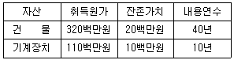
- 17.5백만원/년
- 18.5백만원/년
- 19.5백만원/년
- 20.5백만원/년
- 21.5백만원/년
(정답률: 35%)
35. 구매방법의 유형에 관한 설명으로 옳지 않은 것은?
- 본사집중구매는 전문지식을 통한 구매가 가능하다.
- 현장분산구매는 구입단가가 저렴하다.
- 일괄구매주문(Blanket Order)을 통해 조달비용을 절감할 수 있다.
- 예측구매는 자금의 사장화 및 보관비용이 증가한다.
- 상용기성품(COTS: Commercial Off the Shelf) 구매를 통해 개발비용을 절감할 수 있다.
(정답률: 64%)
36. 다음에서 설명하고 있는 향후 활용이 예상되는 차세대 물류기술은?
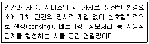
- IoT(Internet of Things)
- Ubiquitous
- Process Mining
- Big Data
- Cloud Computing
(정답률: 66%)
37. 물류시스템의 구축순서를 올바르게 나열한 것은?
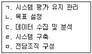
- ㄱ - ㄷ - ㄹ - ㄴ - ㅁ
- ㄴ - ㅁ - ㄷ - ㄹ - ㄱ
- ㄴ - ㄷ - ㅁ - ㄱ - ㄹ
- ㅁ - ㄴ - ㄹ - ㄷ - ㄱ
- ㅁ - ㄱ - ㄴ - ㄷ - ㄹ
(정답률: 62%)
38. 물류표준화에 관한 설명으로 옳은 것은?
- 포장표준화의 주요 요소인 재료, 기법, 치수, 강도 중에서 강도의 표준화가 가장 선행되어야 한다.
- 물류 프로세스에서의 화물 취급단위를 규격화하고 설비 등의 규격, 강도, 재질 등을 다양화한다.
- 하역보관의 기계화, 자동화 등에 필수적인 선결 과제이다.
- 세계화에 대응하는 물류표준화는 필요 없다.
- 국가차원의 물류표준화 추진은 비효율적이다.
(정답률: 72%)
39. 컨테이너의 보안기술에 관한 설명으로 옳은 것은?
- 차량이나 선박 추적에 활용되는 물류정보기술이 컨테이너 추적에는 적용 불가능하다.
- 복층으로 적재된 컨테이너 내부의 화물정보를 모니터링하는 목적으로 사용되며, 인공위성을 이용한 방법이 보편화되어 있다.
- RFID기술은 나무, 직물, 플라스틱 등을 투과하지 못하므로 컨테이너 보안에 적용할 수 없다.
- 전자봉인(e-seal)은 컨테이너의 개봉흔적이나 내부 침입의 여부를 전자적으로 감지하는 읽기 및 쓰기 겸용 장치이며, 재활용이 가능하다.
- CSD(Container Security Device)는 컨테이너 내부 침입 유무와 화물파손 여부, 이동상황 등을 실시간으로 파악하는 물류보안 시스템이다.
(정답률: 50%)
40. 친환경 녹색물류에 관한 설명으로 옳지 않은 것은?
- 녹색물류 활동을 통한 비용절감이 가능하며, 기업의 사회적 이미지가 제고된다.
- 조달ㆍ생산 → 판매 → 반품ㆍ회수ㆍ폐기(reverse)상의 과정에서 발생하는 환경오염을 감소시키기 위한 제반 물류활동을 의미한다.
- 우리나라에서는 폐기물을 다량 발생시키고 있는 생산자에게 폐기물을 감량 및 회수하고, 재활용 할 의무를 부여하는 생산자책임 재활용제도를 운영하고 있다.
- 기업에서는 비용과 서비스에 상관없이 환경을 고려한 물류시스템을 도입해야 한다.
- 물류활동을 통하여 발생되는 제품 및 포장재의 감량과 폐기물의 발생을 최소화하는 방법 등을 말한다.
(정답률: 81%)
2과목: 화물수송론
41. 화물운송의 종류에 관한 설명으로 옳지 않은 것은?
- 공로운송은 공공도로를 이용하여 운송하는 방법으로 주로 자동차를 이용한다.
- 해상운송은 선박을 이용하여 재화의 장소적 이전을 통해 효용을 창출한다.
- 철도운송은 공로운송에 비해 장거리 대량운송에 적합하다.
- 파이프라인운송은 석유류제품, 가스제품 운송 등에 이용되고 있으며, 다른 운송수단과 연계하여 활용할 수 있는 가능성이 매우 높다.
- 항공운송은 신속한 운송을 요하는 고가 화물에 많이 이용된다.
(정답률: 80%)
42. 방문하는 장소와 시간을 정하여 매일같이 순회하는 운송시스템은?
- 복화운송
- 스왑바디(swap body)운송
- 밀크런(milk run)운송
- 복합일관운송
- 콜드체인(cold chain)운송
(정답률: 72%)
43. 운송에 관한 설명으로 옳지 않은 것은?
- 최적의 운송수단 선택, 정보시스템의 발전, 신규 수송루트의 개발 등으로 운송의 효율성이 향상되었다.
- 운송은 수요자의 요청에 따라 공급이 이루어지는 즉시재(Instantaneous Goods)의 성격을 갖는다.
- Modal Shift 등 수송체계의 다변화, 운송업체의 대형화 등을 통해 운송시스템의 합리화가 가능하다.
- 운송수요는 유통 및 생산에 대한 파생수요적 성격을 갖는다.
- 운송 대형화에 따른 비용 절감으로 물류비 중 운송비가 가장 낮은 비중을 차지하고 있다.
(정답률: 80%)
44. 화물운임을 형태별로 분류했을 때 옳지 않은 것은?
- 계산방법에 따른 분류: 인가운임, 신고운임
- 지급시기에 따른 분류: 선불운임, 후불운임
- 부과방법에 따른 분류: 종가운임, 최저운임
- 적재정도에 따른 분류: 만재운임, 혼재운임
- 연계운송에 따른 분류: 통운임, 복합운임
(정답률: 40%)
45. 운송의 효율성을 향상시킬 수 있는 방안으로 옳지 않은 것은?
- 가동율 극대화
- 공차율 극대화
- 수송의 대형화
- 회전율 극대화
- 영차율 극대화
(정답률: 76%)
46. 정보기술의 발달에 따른 화물운송의 변화에 관한설명으로 옳지 않은 것은?
- 물류정보 기술의 발달로 재고가 증가되고 있지만 배송물량은 감소하고 있다.
- 주문과 재고의 가시성이 확보되면서 차량배차에 대한 효율성이 증가하여 운송비를 절감할 수 있게 되었다.
- 다품종 소량 화물이 늘어나면서 정보기술을 활용한 배송체계를 구축하는 사례가 늘어나고 있다.
- 고객에게 제품도착 예정시간을 알려주고, 사후 배송서비스에 대한 고객만족도를 모니터링하는 경우가 늘어나고 있다.
- 정보통신기기를 활용한 배송정보 조회, 배송완료 통지 등의 부가운송서비스 제공이 늘어나고 있다.
(정답률: 68%)
47. 한국 산업 표준 KS T 0001에 제시된 화물운송에 관한 용어의 정의로 옳지 않은 것은?
- 기계류: 포장하지 않고 분립체 상태로, 대량으로 수송되는 화물
- 일관수송: 물류 효율화의 목적으로 화물을 발송지에서 도착지까지 해체하지 않고 연계하여 수송하는 것
- 산업차량: 일정한 작업장에서 각종 운반 하역 작업에 사용되는 차량
- 출고: 창고에서 주문에 맞춰 화물을 꺼내는 것
- 운반: 물품을 비교적 짧은 거리로 이동시키는 것
(정답률: 71%)
48. 운송의 기능 및 효용에 관한 설명으로 옳지 않은 것은?
- 운송은 지역적 분업화에 기여한다.
- 운송의 장소적 효용은 공간적 격차를 해소시켜 준다.
- 운송의 시간적 효용은 생산과 소비의 시간적 격차를 조정해 준다.
- 운송에는 재화를 일시적으로 보관하는 기능이 있다.
- 운송은 재화의 상품가격 조정 및 안정화에는 기여하지 않는다.
(정답률: 68%)
49. 화물자동차의 질량 및 하중 제원에 관한 용어가 아닌 것은?
- 공차중량(empty vehicle weight)
- 축하중(axle weight)
- 오버행(overhang)
- 차량총중량(gross vehicle weight)
- 최대적재량(maximum payload)
(정답률: 63%)
50. 화물자동차의 운송비용에 관한 설명으로 옳지 않은 것은?
- 거리가 증가할수록 ton-km 단위당 운송비용은 낮아진다.
- 변동비에는 차량수리비와 연료비가 포함된다.
- 취급이 어렵거나 운송에 시간이 많이 소요되는 화물의 경우 운송비용이 높아진다.
- 고정비에는 세금 및 공과금이 포함된다.
- 1회 운송단위가 클수록 단위당 운송비용은 높아진다.
(정답률: 79%)
51. 화물자동차의 영차율 향상을 위한 방법이 아닌 것은?
- 에어스포일러(Air Spoiler)의 활용
- 기업 간 운송제휴
- 화물운송정보시스템의 활용
- 화물자동차운송가맹사업자의 활용
- 복화물량의 확보
(정답률: 77%)
52. A 기업은 자사 컨테이너 트럭과 외주를 이용하여 B 지점에서 C 지점까지 월 평균 1,600TEU의 물량을 수송하는 서비스를 제공하고 있다. 아래의 운송조건에서 40feet용 트럭의 1일 평균 필요 외주 대수는?
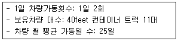
- 2대
- 3대
- 4대
- 5대
- 6대
(정답률: 50%)
53. 표준궤를 사용하는 우리나라 철도 궤간 폭으로 옳은 것은?
- 1,335mm
- 1,435mm
- 1,535mm
- 1,635mm
- 1,735mm
(정답률: 63%)
54. 운송정보시스템의 구성요소 중 하나인 라우팅(routing) 시스템을 성공적으로 구축ㆍ운영하기 위한 설명으로 옳지 않은 것은?
- 차량추적시스템과의 연계가 필요하다.
- 통계적 시뮬레이션 기법도 활용하는 것이 좋다.
- 배송시간과 유효 배송처의 정보도 중요하다.
- 라우팅 스케줄의 결과는 수정하여 적용할 수 있다.
- 초기에 표준으로 구축된 데이터베이스는 수정해서는 안 된다.
(정답률: 77%)
55. 화물운송용 트레일러에 관한 설명으로 옳지 않은 것은?
- 운송물량이 소규모일수록 효율적이며, 복화물량이 많다.
- 견인차량 1대에 여러 대의 피견인 차량의 운영이 가능하여 트랙터의 효율적 이용이 가능하다.
- 차체무게의 경량화 노력이 이루어지고 있다.
- 컨테이너, 중량물, 장척물 등의 운송이 가능하다.
- 화물운송용 트레일러에는 저상식, 평상식 등이 있다.
(정답률: 67%)
56. 일반화물자동차의 화물 적재 공간에 박스형의 덮개를 고정적으로 설치한 차량은?
- 일반호퍼차
- 밴형화물자동차
- 탱크로리
- 덤프트럭
- 컨테이너 섀시
(정답률: 66%)
57. 트럭운송이 철도운송보다 비용이 절감되는 운송구간은 몇 Km까지인가? (단, 수송비는 Ton-Km 당 수송비이며, Chatban 공식에 따른다.)
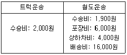
- 180Km
- 200Km
- 220Km
- 240Km
- 260Km
(정답률: 57%)
58. 우리나라 철도운송의 특징으로 옳지 않은 것은?
- 도로운송에 비해 전천후적인 운송수단으로 정시성 확보에 유리하다.
- 도로운송에 비해 탄력적인 운임체계를 갖고 있어 다양한 화물 취급에 유리하다.
- 국내화물운송시장에서 철도운송은 도로운송에 비해 수송분담률이 낮다.
- 도로의 인프라 투자에 비해 상대적으로 철도에 대한 투자가 미흡하여 관련 기반시설이 부족하다.
- 철도운송은 문전에서 문전까지의 일관운송서비스를 제공할 수 없기 때문에 적재와 하역 시 많은 단계를 필요로 한다.
(정답률: 61%)
59. 우리나라 컨테이너 철도운송에 관한 설명으로 옳지 않은 것은?
- COFC(Container On Flat Car) 방식이 사용되고 있다.
- DST(Double Stack Train)는 활용되지 않고 있다.
- 공로운송에 비해 친환경 물류정책에 부합하는 운송수단이다.
- 철도 컨테이너운송에 있어서 하역은 RO-RO(Roll On-Roll Off) 방식으로 이루어지고 있다.
- 의왕 ICD는 내륙컨테이너기지 및 내륙통관기지로서의 역할을 수행하고 있다.
(정답률: 71%)
60. 철도운송과 관련된 용어로 옳지 않은 것은?
- Kangaroo System
- Birdy Back System
- TOFC(Trailer On Flat Car)
- Block Train
- Freight Liner
(정답률: 70%)
61. 컨테이너 종류와 운반대상 화물이 옳게 짝지어진 것은?
- 탱크 컨테이너(Tank Container): 목재, 기계류, 승용차
- 히티드 컨테이너(Heated Container): 화학제품, 유류
- 행거 컨테이너(Hanger Container): 장치화물, 중량물, 기계류
- 솔리드 벌크 컨테이너(Solid Bulk Container): 소맥분, 가축사료
- 오픈 탑 컨테이너(Open Top Container): 과일, 채소, 냉동화물
(정답률: 76%)
62. 선주가 속한 국가의 엄격한 요구조건과 의무부과를 피하기 위하여 자국이 아닌 파나마, 온두라스 등과 같은 국가의 선박 국적을 취하는 제도는?
- 톤세제도
- 제2치적제도
- 편의치적제도
- 선급제도
- 공인경제운영인제도
(정답률: 59%)
63. 선박의 안정을 유지하기 위하여 적재하는 중량물을 말하며 이전에는 모래, 자갈 등을 사용했으나 지금은 일반적으로 해수를 사용하는 것을 뜻하는 용어는?
- Ballast
- Anchor
- Davit
- Bilge Keel
- Derrick Boom
(정답률: 72%)
64. 정기선 운송에 관한 서류와 설명이 옳게 연결된 것은?
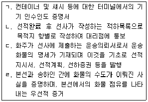
- ㄱ: Shipping Request, ㄴ: Dock Receipt
- ㄱ: Shipping Request, ㄷ: Arrival Notice
- ㄴ: Dock Receipt, ㄷ: Arrival Notice
- ㄴ: Dock Receipt, ㄹ: Mate's Receipt
- ㄷ: Shipping Request, ㄹ: Mate's Receipt
(정답률: 68%)
65. 항공화물운송에 관한 설명으로 옳은 것은?
- 항공화물운송은 여객운송에 비해 일방성(directional imbalance)이 적은 특성을 가지고 있다.
- 전 세계 항공화물 포워더의 이익을 보호하고, 대표하는 단체는 ICAO이다.
- 항공사가 포워더에게 발행하는 운송장을 HAWB이라 한다.
- 운임산출 시 근거로 한 운송경로는 실제의 화물운송경로와 반드시 일치할 필요는 없다.
- 항공화물의 파손 및 손상에 대한 클레임은 화물인 수 후 7일 이내에 서면으로 해야 한다.
(정답률: 61%)
66. 항공운송의 전세운송(charter)에 관한 설명으로 옳지 않은 것은?
- 전세운송은 IATA 운임(tariff)에 상관없이 화물, 기종 등에 따라 다양하게 결정된다.
- 전세운송은 항공사에 대해서도 항공기 가동률을 높이는데 큰 역할을 한다.
- 전세운송을 위해서는 필요한 조치가 많다는 점과 상대국의 규정을 감안하여 시간적 여유를 두고 항공사와 협의해야 한다.
- 항공사는 전세운송을 할 때 중간 기착지에 대해서도 해당 국가의 허가를 얻어야 한다.
- 전세자가 사용하고 남은 공간은 전세자의 동의에 상관없이 누구도 사용할 수 없다.
(정답률: 48%)
67. 본선의 이ㆍ접안 시 줄잡이 역무를 제공하는 항만 운송관련사업은?
- Launching
- Lining
- Tallying
- Ship Cleaning
- Bunkering
(정답률: 68%)
68. 복합운송주선인(Freight Forwarder)에 관한 설명으로 옳지 않은 것은?
- 자기 명의의 복합운송증권을 발행한다.
- 운송 주체로서의 기능과 역할을 수행하며 화물운송을 주선하기도 한다.
- 자체적으로 운송수단을 보유하고 있는 복합운송주 선인을 NVOCC라 한다.
- 소량의 화물을 집하하여 컨테이너 단위화물로 만드는 혼재작업도 수행한다.
- 수출업자로부터 징수하는 운임과 운송업자에게 지불하는 차액을 이익으로 취득한다.
(정답률: 68%)
69. 세이빙(Saving)법에 관한 설명으로 옳지 않은 것은?
- 차량의 통행시간, 적재능력 등이 제한되는 복잡한 상황에서 차량의 노선 배정 및 일정계획 문제의 해결방안을 구하는 한 방법이다.
- 배차되는 각 트럭의 용량은 총수요보다 크고 특정 고객의 수요보다는 작아야 한다.
- 배송센터에서 두 수요지까지의 거리를 각각 a, b라 하고 두 수요지 간의 거리를 c라 할 때 saving은 a+b-c가 된다.
- 세이빙이 큰 순위로 차량 운행 경로를 편성한다.
- 경로 편성 시 차량의 적재 용량 등의 제약을 고려해야 한다.
(정답률: 60%)
70. 물류의 단계별 흐름에 관한 설명으로 옳게 연결된 것은?
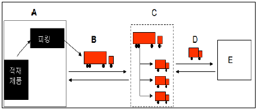
- A: 창고 → B: 수송 → C: 크로스독 운송 → D: 루트 배송 → E: 고객
- A: 창고 → B: 수송 → C: 루트 배송 → D: 크로스독 운송 → E: 고객
- A: 창고 → B: 크로스독 운송 → C: 수송 → D: 루트 배송 → E: 고객
- A: 수송 → B: 창고 → C: 크로스독 운송 → D: 루트 배송 → E: 고객
- A: 수송 → B: 루트 배송 → C: 크로스독 운송 → D: 창고 → E: 고객
(정답률: 62%)
71. 공동수배송에 관한 설명으로 옳지 않은 것은?
- 공동수배송에 참여하는 기업들은 집하, 분류, 배송 측면에서의 시너지 효과를 기대할 수 없다.
- 공동수배송은 사람, 자금, 시간 등 경영자원을 효율적으로 활용할 수 있게 한다.
- 공동수배송은 동종업계와의 공동수배송, 지역 내 인근 회사와의 공동수배송 등 다양한 방식을 활용하고 있다.
- 기업 간의 이해 불일치, 정보공유 기피 등이 공동 수배송 활성화의 장애 요인이다.
- 공동수배송의 유형은 배송공동형, 집하배송공동형, 공동납품 대행형 등으로 다양하다.
(정답률: 71%)
72. B 항공사는 서울-상해 직항 노선에 50명의 초과예약 승객이 발생하였다. 이들 승객 모두가 다른 도시를 경유해서라도 상해에 오늘 도착하기를 원 한다. 다음 그림이 경유 항공편의 여유 좌석 수를 표시한 항공로일 때, 다른 도시를 경유하여 상해로 갈 수 있는 최대 승객 수는 몇 명인가?
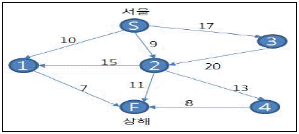
- 23
- 24
- 25
- 26
- 27
(정답률: 64%)
73. 택배에 관한 설명으로 옳지 않은 것을 모두 고른 것은?
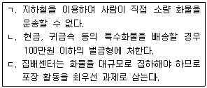
- ㄱ
- ㄱ, ㄴ
- ㄱ, ㄷ
- ㄴ, ㄷ
- ㄱ, ㄴ, ㄷ
(정답률: 40%)
74. 차고 및 A, B, C 간의 거리는 다음 표와 같다. 차고에서 출발하여 A, B, C 3개의 수요지를 각각 1 대의 차량이 방문하는 경우에 비해, 1대의 차량으로 3개의 수요지를 모두 방문하고 차고지로 되돌아오는 경우, 수송 거리가 최대 몇 km 감소되는가?
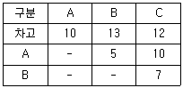
- 30
- 32
- 34
- 36
- 38
(정답률: 53%)
75. 다음 From/To chart에는 7개 지점 간의 거리가 표시되어 있다. A지점에서 G지점까지의 최단 경로 거리는 얼마인가? (단, 단위는 km이며, '-'는 두 지점간의 이동이 불가능하다는 것을 나타낸다.)
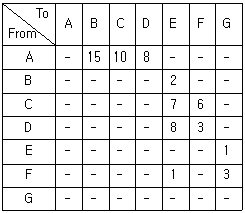
- 12km
- 13km
- 14km
- 15km
- 16km
(정답률: 29%)
76. 아래와 같은 운송조건 하에서 최소비용법(Least Cost Method)과 북서코너법(North-West Corner Method)을 이용하여 총 운송비용을 구할 때 각각의 방식에 따라 산출된 총 운송비용의 차는 얼마인가?
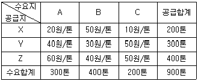
- 0원
- 500원
- 1,000원
- 1,500원
- 2,000원
(정답률: 59%)
77. 택배표준약관(공정거래위원회 표준약관 제10026호)상 용어의 정의로 옳은 것은?
- '택배사업자'라 함은 운송장에 송하인으로 기재되는 자를 말한다.
- '택배'라 함은 대량의 운송물을 수하인의 주택, 사무실 또는 기타의 장소까지 운송하는 것을 말한다.
- '증명서'라 함은 사업자와 고객 간의 택배계약의 성립과 내용을 증명하기 위하여 사업자의 청구에 의하여 고객이 발행한 문서를 말한다.
- '수하인'이라 함은 고객이 운송장에 운송물의 수령자로 지정하여 기재하는 자를 말한다.
- '인수'라 함은 사업자가 수하인에게 운송장에 기재된 운송물을 넘겨주는 것을 말한다.
(정답률: 72%)
78. 고객이 운송장에 운송물의 가액을 기재하지 않았을 경우 택배사업자의 손해배상한도액은 ( )만원이 적용된다. 또한 운송물 1포장의 가액이 ( )만원을 초과하는 화물에 대해서는 택배 사업자가 운송물의 수탁을 거절할 수 있다. 괄호 안에 들어갈 숫자가 옳게 연결된 것은? (단, 공정거래위원회 표준약관 제10026호 택배표준약관에 따른다.)
- 80, 500
- 70, 400
- 50, 300
- 40, 200
- 30, 100
(정답률: 67%)
79. 택배표준약관(공정거래위원회 표준약관 제10026호)상 고객이 운송장에 기재할 사항으로 옳지 않은 것은?
- 운송장의 작성 연월일
- 운송물의 인도예정장소 및 인도예정일
- 운송물의 종류(품명), 수량 및 가액
- 송하인(고객)의 주소, 이름(또는 상호) 및 전화번호
- 운송물의 중량 및 용적 구분
(정답률: 53%)
80. 신도시 A지역에 지역도로를 신설하려고 한다. 6곳의 거점 중 어디에서나 나머지 5곳을 직접 또는 다른 곳을 경유하여 갈 수 있어야 한다. 건설비용이 다음과 같을 때 도로를 건설하는데 소요되는 최소 총비용은? (단위: 억원)
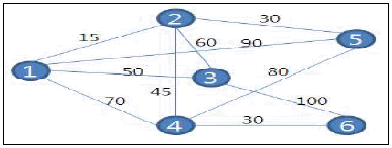
- 150
- 160
- 170
- 180
- 190
(정답률: 37%)
3과목: 국제물류론
81. 다음에서 설명하는 해운동맹의 화주 유치수단은?
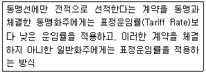
- Fidelity Rebate System
- Contract Rate System
- Service Contract
- Department Store Deal Arrangement
- Deferred Rebate System
(정답률: 47%)
82. CLP(Container Load Plan)에 관한 설명으로 옳은 것은?
- CLP는 컨테이너에 적재된 화물의 명세를 기재하는 서류로, 컨테이너 개별로 작성하지 않고 반드시 B/L건별로 작성해야 한다.
- Shipper's Pack의 경우 CLP는 수하인 또는 수하인의 대리인이 작성한다.
- CLP는 CFS/CFS 간의 화물수취인도증서로 사용된다.
- CLP는 화물적입지에서 세관에 대한 화물반입신고서의 대용으로 사용된다.
- LCL화물의 경우 CLP는 대개 CFS Operator나 이와 계약관계에 있는 검수회사가 선적예약 시 화주가 제출한 제반서류를 기초로 작성한다.
(정답률: 34%)
83. 복합운송증권에 관한 설명으로 옳지 않은 것은?
- 복합운송증권은 복합운송계약에 의해 복합운송인이 발행하는 운송서류로서 복합운송계약의 내용, 운송조건 및 운송화물의 수령 등을 증명하는 증거서류이다.
- 복합운송증권은 두 가지 이상의 다른 운송방식에 의하여 운송물품의 수탁지와 목적지가 상이한 국가의 영역간에 이루어지는 복합운송계약 하에서 발행되는 증권이다.
- 컨테이너 화물에 대한 복합운송증권은 FIATA의 표준양식을 사용하여 발행될 수도 있다.
- 'UN 국제물품복합운송조약 1980'에 따르면 복합 운송증권은 송화인의 선택에 관계없이 배서에 의한 양도가 가능한 유통성증권으로만 발행된다.
- 복합운송증권을 발행하는 복합운송인은 해상운송인, 육상운송인, 항공운송인, 그리고 운송주선업자도 될 수 있다.
(정답률: 57%)
84. ( )안에 들어갈 것으로 옳은 것은?
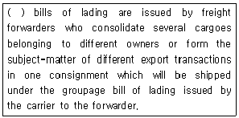
- Surrendered
- House
- Switch
- Third Party
- Master
(정답률: 39%)
85. 항공화물운송장에 관한 설명으로 옳지 않은 것은?
- 송하인이 항공화물운송장에 보험금액과 보험부보 사실을 기재하는 화주보험을 부보한 경우에는 항공화물운송장은 보험계약의 증거가 된다.
- 항공화물운송장은 일반적으로 화물이 항공기에 적재된 이후에 발행된다.
- 항공화물운송장은 송하인이 작성함이 원칙이나 항공사나 항공사의 권한을 위임받은 대리점에 의해 작성될 수 있다.
- 항공화물운송장은 일반적으로 기명식으로 발행된다.
- 항공화물운송장은 비유통성이다.
(정답률: 48%)
86. 선하증권의 종류에 관한 설명으로 옳지 않은 것은?
- Groupage B/L: 운송주선인이 동일한 목적지로 운송 하는 화물을 혼재하여 하나의 그룹으로 만들어 선적할 때 선박회사가 운송주선인에게 발행하는 B/L
- Stale B/L: 별도의 명시가 없는 한 선적일로부터 21일이 경과된 B/L
- Foul B/L: 신용장에 명시된 수익자가 아닌 제3자의 명칭이 기재된 B/L
- Optional B/L: 화물이 선적될 때 양륙항이 확정되지 않은 상태로 둘 이상의 항구를 양륙항으로 하여 선적항을 출발한 선박이 최초의 양륙항에 도착하기 전에 양륙항을 선택할 수 있도록 발행된 B/L
- Red B/L: 선하증권과 보험증권의 기능을 결합시킨 B/L
(정답률: 65%)
87. 항해용선계약에서 선내인부의 작업비용을 선적 시에는 용선자가 부담하고 양륙 시에는 선주가 부담하는 조건은?
- FI
- FIO
- FO
- FIOS
- FIOST
(정답률: 47%)
88. (ㄱ) ~ (ㄷ)에 들어갈 용어를 바르게 나열한 것은?
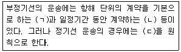
- ㄱ: 항해용선, ㄴ: 기간용선, ㄷ: 나용선
- ㄱ: 나용선, ㄴ: 항해용선, ㄷ: 기간용선
- ㄱ: 기간용선, ㄴ: 항해용선, ㄷ: 개품운송계약
- ㄱ: 개품운송계약, ㄴ: 나용선, ㄷ: 기간용선
- ㄱ: 항해용선, ㄴ: 기간용선, ㄷ: 개품운송계약
(정답률: 64%)
89. 해운 관련 국제협약 또는 기구가 아닌 것은?
- SOLAS
- MARPOL
- ICAO
- STCW
- IMO
(정답률: 45%)
90. 다음에서 설명하는 국제복합운송경로는?
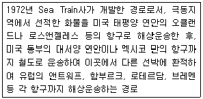
- ALB
- SLB
- TCR
- CLB
- MLB
(정답률: 64%)
91. 20피트 규격의 컨테이너(TEU) 1개에는 평균 25 CBM 부피의 화물이 적재된다. 이 기준을 적용할 때 화물박스 하나가 40 cm×50 cm×60 cm인 경우 이론상 최대 몇 개의 박스가 적재될 수 있는가?
- 약 100 박스
- 약 104 박스
- 약 120 박스
- 약 208 박스
- 약 416 박스
(정답률: 44%)
92. 정기선 해상운송의 운임 중 도착항의 항만사정으로 예정된 기간 내 하역할 수 없을 때 부과하는 것은?
- 지체료(Detention Charge)
- 터미널화물처리비(THC)
- CFS작업료(CFS Charge)
- 통화할증료(CAF)
- 체화할증료(Port Congestion Surcharge)
(정답률: 57%)
93. 선하증권의 법정(필수) 기재사항이 아닌 것은?
- 운송물품의 거래가격
- 운송인의 표시
- 선하증권의 발행지와 발행일자
- 선적항 및 양륙항
- 수통의 선하증권을 발행한 때에는 그 수
(정답률: 35%)
94. 컨테이너 임차 시 임차료, 임차 및 반납조건 등을 포괄적인 계약조건으로 정한 후 계약기간 내에서는 자유롭게 임차와 반납을 허용하는 컨테이너 리스형태는?
- Turn-key Lease
- One Way Lease
- Round Lease
- Lease & Purchase
- Master Lease
(정답률: 29%)
95. 신용장으로 거래하는 화물을 선적한 선박의 일등 항해사가 선적물품에 하자가 있음을 발견하고 본선수취증의 비고란(Remarks)에 이러한 사실을 기재하였다. 이 경우 화주가 취할 수 있는 가장 적절한 조치는?
- Dirty B/L을 발급받아 즉시 은행에 매입을 요청한다.
- L/G를 선사에 제출하고 Clean B/L을 발급받아 은 행에 매입을 요청한다.
- L/I를 선사에 제출하고 Clean B/L을 발급받아 은 행에 매입을 요청한다.
- T/R을 선사에 제출하고 Clean B/L을 발급받아 은 행에 매입을 요청한다.
- L/G를 선사에 제출하고 Clean L/I의 발급을 선사에 요청한다.
(정답률: 43%)
96. 정기선과 부정기선 운송에 관한 설명으로 옳지 않은 것은?
- 해운거래소(Shipping Exchange)에는 주로 정기선 운송시장 정보가 집중되어 있다.
- 부정기선은 주로 단위화되지 않은 상태의 화물을 취급한다.
- 일반적으로 정기선은 정해진 특정항로를 따라 정기 운항하는 반면, 부정기선은 운송수급에 따라 항로가 결정된다.
- 부정기선 운임은 일반적으로 운송계약을 할 때마다 당사자간 협의를 통하여 결정된다.
- BDI는 건화물 부정기선에 관한 운임지수를 말한다.
(정답률: 40%)
97. 다음에 제시된 Incoterms® 2010에서 해상운송 또는 내륙수로운송에 한해서만 사용되는 거래규칙으로 짝지어진 것을 고른 것은?
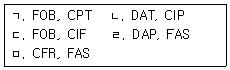
- ㄱ, ㅁ
- ㄴ, ㄹ
- ㄷ, ㄹ
- ㄷ, ㅁ
- ㄹ, ㅁ
(정답률: 50%)
98. 무역계약 시 포함되는 거래조건에 관한 설명으로 옳지 않은 것은?
- 품질조건 중 Sea-Damaged Terms(SD)는 곡물거래에 사용되는 것으로, 원칙적으로는 선적품질결정방법이지만, 운송 중 해수에 의한 물품의 손해는 매도인이 부담하기로 하는 조건이다.
- 과부족용인조건(More or Less Clause)이란 Bulk Cargo에서와 같이 운송 중 수량의 변화가 예상되는 물품에 대해 약정된 허용 범위 내에서 과부족을 인정하는 조건이다.
- Incoterms® 2010에는 “단일 또는 복수의 운송방식용 규칙”군과 “해상 및 내륙수로운송용 규칙”군으로 나뉘어 총 13개의 규칙이 있다.
- 무역대금의 결제에서 COD, D/P방식은 은행이 대금의 지급을 보증하지 않는다.
- 선적일자와 관련하여 선하증권에 선적일이 표시되지 않고 발행일만 표시된 경우에는 선하증권 발행일이 선적일자로 간주된다.
(정답률: 46%)
99. 해상보험에 관한 설명으로 옳지 않은 것은?
- 해상적하보험에는 구협회적하약관(Old Institute Cargo Clause)과 신협회적하약관(New Institute Cargo Clause) 등이 있다.
- 소손해 면책약관(Franchise)은 경미하게 발생한 손해에 대하여는 보험자가 보상하지 않도록 규정한 특별약관이다.
- 담보위험(Risks Covered)이란 보험자가 부담하는 위험으로, 당해 위험으로 발생한 손해에 대하여 보험자가 보상하기로 약속하는 위험을 말한다.
- 피보험이익(Insurable Interest)이란 피보험자가 실제로 보험에 가입한 금액으로 손해발생 시 보험자가 부담하는 보상책임의 최고액을 말한다.
- 공동해손(General Average)이란 보험목적물이 공동의 안전을 위하여 희생되었을 때, 이해관계자가 공동으로 그 손해액을 분담하는 손해를 말한다.
(정답률: 42%)
100. Incoterms® 2010에 규정되어 있는 규칙에 관한설명으로 옳은 것은?
- EXW 규칙은 매도인이 물품의 수출통관을 하지 않고, 자신의 위험과 비용으로 물품을 운송수단에 적재하여 자신의 공장, 창고, 작업장, 영업장 및 기타 지정된 장소에서 매수인의 임의처분 상태로 물품을 인도하는 것을 의미한다.
- CIP 규칙은 매도인이 물품을 수출통관하여 지정장소에서 매도인 스스로 지정한 운송인에게 물품을 인도하여야 하며, 지정목적지까지 운송계약만을 체결하고 운송비(수송비)를 지급하여야 하는 것을 의미한다.
- FCA 규칙은 매도인이 물품을 수출통관하여 지정장소에서 매도인에 의해 지정된 운송인에게 물품을 인도하는 것을 의미한다. 따라서 매수인은 지정장소에서 물품을 인도 받은 때부터 모든 위험과 비용을 부담하여야 한다.
- DAT 규칙은 물품이 지정목적항 또는 지정목적지의 지정터미널에서 도착되는 운송수단에서 양하한 다음 매도인이 물품을 수입통관하여 매수인의 임의처분 상태로 물품을 인도하는 것을 의미한다.
- DAP 규칙은 매도인이 물품을 지정목적지에 도착된 운송수단에서 양하하지 않은 채 매수인의 임의처분 상태로 인도하는 것을 의미한다.
(정답률: 20%)
101. 다음 신용장에서 요구하는 해상보험에 관한 설명으로 옳지 않은 것은?
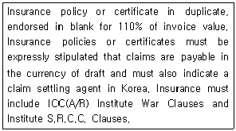
- 보험증권 또는 보험증명서는 2통을 발행하여야 한다.
- 보험금액은 매도인 소재국의 통화로 표시되어야 한다.
- 보험금액은 송장금액의 110%로 부보되어야 한다.
- 보험증권은 백지배서에 의해 양도될 수 있게 발행되어야 한다.
- 보험의 담보조건은 협회적하약관(A/R)조건에 전쟁담보약관과 S.R.C.C. 담보약관을 포함하여야 한다.
(정답률: 40%)
102. Incoterms® 2010 내용 중 ( )안에 들어갈 용어로 옳은 것은?
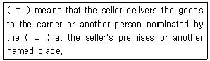
- ㄱ: FOB, ㄴ: seller
- ㄱ: FCA, ㄴ: buyer
- ㄱ: CFR, ㄴ: seller
- ㄱ: CIF, ㄴ: buyer
- ㄱ: CIP, ㄴ: buyer
(정답률: 39%)
103. Incoterms® 2010 내용 중 ( )안에 들어갈 규칙으로 옳은 것은?
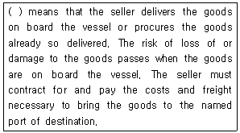
- CFR
- CIP
- FOB
- CIF
- CPT
(정답률: 32%)
104. 일반화물선에서 사용되는 용어에 관한 설명으로 옳지 않은 것은?
- Hatch Way는 선창 내에 화물을 적재하거나 양하하기 위한 통로로 사용된다.
- Bulk Head는 선박의 수직 칸막이로서 선박의 한 부분에 손상이 발생하여 침수될 경우 다른 부분의 침수를 방지하는 역할을 한다.
- Double Bottom은 선저의 이중구조를 말하는 것으로 좌초시의 안전을 위한 장치이다.
- Shaft Tunnel은 엔진과 프로펠러를 연결하는 프로펠러 축을 보호하기 위해 만든 터널이다.
- 선미방향에서 선수방향을 바라보면서 왼쪽을 Starboard Side라 하고 오른쪽을 Port Side라 한다.
(정답률: 39%)
1⑤. 운송되는 화물의 수량에 관계없이 항해(Voyage)를 단위로 해서 포괄적으로 계산하여 부과하는 운임은?
- Dead Freight
- Advanced Freight
- Lump Sum Freight
- Back Freight
- Pro Rate Freight
(정답률: 53%)
106. 해상화물운송장에 관한 설명으로 옳지 않은 것은?
- 해상화물운송장은 대개 기명식으로 발행된다.
- 해상화물운송장을 이용한 화물의 전매는 불가능하다.
- 해상화물운송장에 관한 통일된 국제규범은 존재하지 않는다.
- 해상화물운송장은 UCP 600을 적용할 때 일정조건 하에 은행이 수리할 수 있는 운송서류이다.
- 양륙지에서 수하인이 운송인에 의해 화주임이 확인된 경우 수하인이 화물의 인도청구권을 행사하기 위해 운송인에게 반드시 해상화물운송장을 제시하여야 하는 것은 아니다.
(정답률: 40%)
107. 컨테이너 하역장비 명칭에 관한 설명으로 옳지 않은 것은?
- Container Crane: 컨테이너의 하역을 능률적으로 수행하기 위한 대형 하역설비이다.
- Transfer Crane: 컨테이너를 다단적하기 위해 전후방으로 레일상 혹은 타이어륜으로 이동하는 교형식 크레인이다.
- Chassis: 차량형 이동장비로서 야드 내에서 화물이 적재되지 않은 공컨테이너를 하역하는 장비이다.
- Yard Tractor: 야드 내의 작업용 컨테이너 운반트럭으로 일반 컨테이너 트럭과 대체로 같다.
- Straddle Carrier: 터미널 내에서 컨테이너를 양각 사이에 끼우고 이동시키는 운반차량이다.
(정답률: 56%)
108. 용선계약의 종류에 관한 설명으로 옳은 것은?
- 항해용선 계약에서 용선자는 선복을 이용하고 선주는 운송행위를 한다.
- 기간용선 계약에서 용선자는 화주에 대해 전적으로 내항성 담보책임을 부담해야 한다.
- 나용선 계약에서 선주의 비용부담항목에는 수선비와 보험료, 그리고 감가상각비가 포함된다.
- 나용선 계약에서 선주는 선장을 지휘, 감독할 권리를 갖는다.
- 나용선, 기간용선, 항해용선 계약 가운데 용선자의 비용부담이 가장 큰 계약형태는 항해용선 계약이다.
(정답률: 32%)
109. 국제물류활동에 영향을 미칠 것으로 예상되는 최근의 환경 변화라고 보기 어려운 것은?
- 글로벌 경영활동의 지속적인 확대
- 실시간 공급사슬관리에 대한 관심 증대
- 물류보안의 중요성 증대
- 운송선박의 대형화 및 고속화
- 주요 국제해운항로에서의 해운동맹 강화
(정답률: 60%)
110. 수출입과 관련된 물류거점에 관한 설명으로 옳지 않은 것은?
- ODCY: 부두 내 CY의 부족현상을 보완하기 위해 부두에서 떨어진 곳에 설치된 컨테이너장치장으로서, 수출입 컨테이너 화물의 장치, 보관 및 통관 등의 업무가 이루어지는 장소이다.
- 보세구역: 효율적인 화물관리와 관세행정의 필요성을 고려하여 세관장이 지정하거나 특허한 장소로서, 사내창고나 물류센터에서 출고된 수출품의 선적을 위해 거치게 되는 장소이다. 그러나 수입품의 통관을 위해 외국물품을 장치하는 장소는 아니다.
- CY: 컨테이너를 인수ㆍ인도하고 보관하는 장소로서, 넓게는 Marshalling Yard, Apron, CFS 등을 포함하는 컨테이너터미널의 의미로도 사용되지만 좁게는 컨테이너터미널의 일부 공간을 의미하기도 한다.
- CFS: 수출하는 LCL화물을 집하하여 FCL화물로 만들거나, 수입하는 혼재화물을 컨테이너에서 적출하는 등의 화물취급 작업을 하는 장소를 말한다.
- ICD: 항만 내에서 이루어져야 할 본선 선적 및 양하작업과 마샬링 기능을 제외한 장치보관기능, 집하분류기능, 통관기능을 가지는 내륙의 특정구역으로서, 선사 및 대리점, 포워더, 하역회사, 관세사, 트럭회사, 포장회사 등이 입주하여 물류 관련 활동을 수행할 수 있는 장소를 말한다.
(정답률: 58%)
111. 물품을 미국의 A로부터 수입하면서 매수인 B가 지불한 금액이 다음과 같다. 이 경우 수입물품에 부과되는 관세의 과세가격은? (단, 무역거래규칙은 CFR이다.)
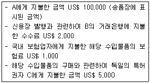
- US$ 100,000
- US$ 101,000
- US$ 102,000
- US$ 106,000
- US$ 108,000
(정답률: 16%)
112. 국제물품매매계약에 관한 UN 협약(비엔나협약, 1980)에 관한 설명으로 옳지 않은 것은?
- 동 협약은 경매에 의한 매매, 강제집행 또는 기타 법률상의 권한에 의한 매매 등의 국제매매계약에는 적용이 배제된다.
- 청약은 그것이 취소불능한 것이라도 어떠한 거절의 통지가 청약자에게 도달한 때에는 그 효력이 상실된다.
- 매수인이 물품을 인수한 당시와 실질적으로 동등한 상태의 물품을 반환할 수 없는 경우에는 매수인의 계약해제권은 상실되나 매도인에 대한 대체품 인도청구권은 상실되지 않는다.
- 매수인은 손해배상 이외의 구제를 구하는 권리행사로 인하여 손해배상을 청구할 수 있는 권리를 박탈당하지 아니한다.
- 청약은 그것이 취소불능한 것이라도 그 철회가 청약의 도달 전 또는 그와 동시에 피청약자에게 도달하는 경우에는 이를 철회할 수 있다.
(정답률: 23%)
113. 국제물류관리기법의 출현 시기를 순서대로 바르게 나열한 것은?
- CIM → CALS → JIT → SCM
- JIT → CIM → CALS → SCM
- SCM → CALS → JIT → CIM
- JIT → SCM → CALS → CIM
- SCM → JIT → CIM → CALS
(정답률: 23%)
114. 해운항만산업의 변화를 설명한 것으로 옳지 않은 것은?
- 선사간의 경쟁이 심화됨에 따라 선사간 전략적 제휴가 어려워지게 되었으며, 대신 선사를 소형화하여 화주들의 다양한 수요에 부응하고 경쟁에 신속하게 대응하려는 움직임은 커지고 있다.
- 미국의 신해운법(Shipping Act, 1984)이 제정되면서 운임동맹의 가격카르텔 기능이 약화되어 선사간 운임경쟁이 가속화되었다.
- 세계 주요 선사들은 초대형선을 다투어 건조하여 선박건조비와 운항비의 단가를 낮추는 규모의 경제를 추구하게 되었다.
- 각국 정부의 적극적인 지원에 따라 세계 도처의 여러 항만이 첨단화되고, 고생산화되는 현상이 나타나고 있다.
- 부가가치 물류가 진전됨에 따라 화주, 선사, 항만, 항만배후지를 연계하는 공급사슬의 중요성이 부각되고 있다.
(정답률: 52%)
115. 다음 신용장에 규정된 선하증권 조항 중 각 밑줄 친 부분에 관한 설명으로 옳지 않은 것은?
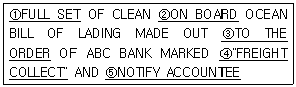
- 전통(全通)으로 구성된 선하증권을 의미한다.
- 본선적재 후 발행되는 선적선하증권을 의미한다.
- 지시식 선하증권을 의미한다.
- 이 경우 적용되는 Incoterms® 2010의 규칙은 CFR 또는 CIF규칙이다.
- 착화통지처는 신용장 발행의뢰인이다.
(정답률: 55%)
116. 개항에 입항한 선박에서 하역한 외국물품을 관세법의 규정에 따라 내륙지에 있는 보세창고로 운송 하는 절차는?
- 보세운송
- 내국운송
- 외국운송
- 면세운송
- 면책운송
(정답률: 66%)
117. 무역대금 결제에서 사용되는 방식이 아닌 것은?
- CWO
- L/C
- D/A
- CQD
- CAD
(정답률: 39%)
118. 해상보험(신협회적하약관)에서 규정하고 있는 면책위험이 아닌 것은?
- 지연에 의한 손실
- 지진ㆍ분화 또는 낙뢰
- 원자핵무기에 의한 손해
- 물품고유의 하자ㆍ성질
- 선박소유자의 지급불능
(정답률: 10%)
119. 국제상사분쟁해결에 관한 설명으로 옳지 않은 것은?
- 중재는 심문절차나 그 판정문에 대해 비공개 원칙을 견지하고 있다.
- '외국중재판정의 승인과 집행에 관한 UN 협약(뉴욕협약, 1958)'에 가입된 회원국가 간에 내려진 중재판정은 상대국에 그 효력을 미칠 수 있다.
- 당사자에 의한 무역클레임 해결방법에는 클레임포기, 화해 등이 있고, 제3자에 의한 해결방법으로는 알선, 조정, 중재, 소송 등이 있다.
- 중재를 통한 분쟁해결은 계약체결 시 당사자간의 중재합의에 의해 할 수 있지만, 분쟁이 발생한 후에는 당사자가 합의를 하더라도 중재로 분쟁을 해결할 수 없다.
- 중재는 단심제이고 한 번 내려진 중재판정은 중재 절차에 하자가 없는 한 확정력을 갖는다.
(정답률: 62%)
120. 해상운송 관련 국제규칙이 아닌 것은?
- 헤이그-비스비 규칙
- 함부르크 규칙
- 로테르담 규칙
- 헤이그 규칙
- 몬트리올 규칙
(정답률: 62%)